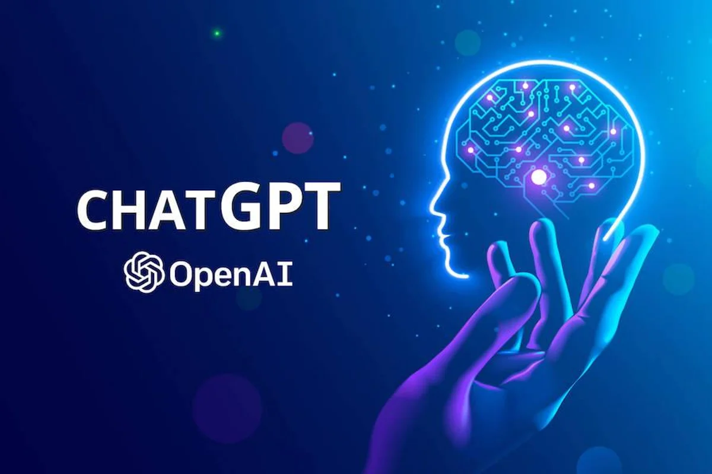

The study says that jobs with higher pay are more likely to be automated than jobs with lower pay. Additionally, the study found that occupations that rely heavily on scientific and critical thinking abilities are less susceptible to automation. On the other hand, jobs that call for knowledge of programming and writing are more likely to be automated. The studys authors identified several high-risk occupations, such as those of web and digital interface designers, blockchain engineers, tax preparers, authors, and others. Large Language Models have the potential to automate all of the jobs on this list.
The future of Artificial Intelligence (AI) plays an essential part in our daily existence and implementing social Intelligence is the next move toward the future of AI. Artificial intelligence is a discipline that uses computer science and large datasets to solve problems. It also includes the subfields of machine learning and deep learning, which are commonly discussed in the context of artificial intelligence. AI algorithms are used in these fields to build expert systems that make forecasts or categorizations based on incoming data.
The path of artificial intelligence will be shaped by artificial social intelligence (ASI) (AI). This essay starts with a cognitive science review of ASI, including social perception, theory of mind (ToM), and social contact. Following that, we look at the newly developed algorithmic equivalent in the AI field. Read more
According to Carole House, co-author of President Joe Bidens executive order on crypto and former director of cybersecurity and secure digital innovation at the White House, international crypto innovation could pose a threat to U.S. national security. House stated on Mondays episode of CoinDesk TVs “First Mover” that “driving any of the actors in cryptocurrency and other financial markets to have centers of gravity outside of the United States is also counter to U.S. national security objectives.” She added that U.S. regulators oversight of crypto and financial innovation is also crucial.
